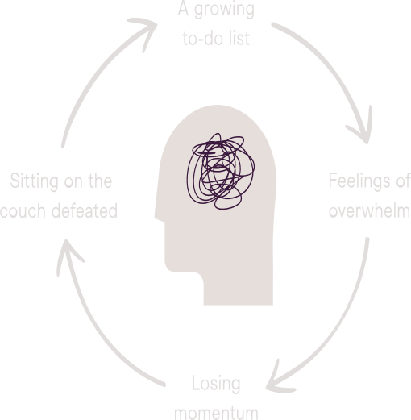
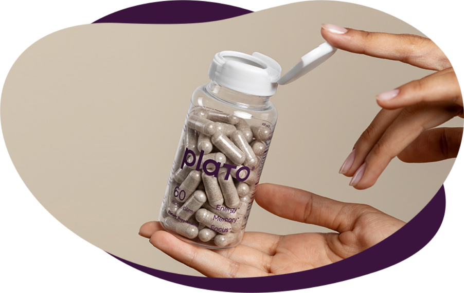

Busy people love Plato for more energy, better focus, and a feeling of calm
"Taking Plato every morning gave me an awesome boost of energy for the day. I noticed I was getting less tired, less stressed, and was able to manage more. This nootropic is hands down awesome. I highly recommend it to anyone looking for more energy, mental clarity, better focus, and more zen."
Daniela S.
Verified Customer

"After a week of Plato, my mood has stabilized and I can think more clearly. I’m working long hours without relying on stimulants, which makes for a smoother transition into the evening.”
Dan R.
Verified Customer

"I felt an increase in focus and energy levels while I worked long strenuous hours. I also love how it doesn’t upset my stomach or make me feel any side effects."
Brittney C.
Verified Customer
Inability to focus can ripple into many areas of life, creating a vicious cycle
Plato is a natural, safe, daily habit to help you get out of this cycle.
Making it harder to get off task
Four safe ingredients to target focus, fatigue, and energy drain

L-Theanine, 200 mg
the thing in green tea that you love
Reduces temporary anxiety induced by stressful situations.
Bacopa Monnieri, 300 mg
a student’s secret weapon
Improves attention, enhances focus, supports a positive mood.

Rhodiola Rosea, 100 mg
the no worries root
May help reduce cortisol response to stress, support a positive mood, and support concentration.
Panax Ginseng, 60 mg
helps you stay in a productive flow
Supports cognitive performance, improves working memory, reduces the perception of mental fatigue.
Two Capsules Daily:
Smart self care to reduce the symptoms of stress and help you focus
Your happiness (and ability to focus) are impacted by the amount of stress you experience. In the same way, negative feelings can contribute to physical and chemical stress in the body and brain.
If you don’t have infinite control over your circumstances -- and who does? -- you can end up feeling trapped.
It can feel like you can never get ahead, and never get out from under your stress.
Plato is a simple, daily ritual to help interrupt that cycle.
Learn More →2 capsules of Plato
Not only does Plato help you adapt to stressful situations, it can help give you the energy and focus to make other positive changes in your life, beginning an upward cycle of change.
Make the first move towards a new base level of calm with Plato.
Take the First Step →You could spend thousands of hours researching the perfect safe solution, but we already did
3
years development
30
clinical studies
4
evidence-based ingredients
18
rounds of testing batch
No, it’s not like the pill from Limitless
Any time you use a supplement, you might wonder if it’s safe.
‘Am I putting the right things in my body?’
That’s why Plato uses the most conservative ingredients possible to get the results that you want.
Noticeably improve your attention, enhance your focus, and support your concentration without the question marks surrounding sourcing or safety.
Plato is effective, but there’s nothing about it that’s too good to be true — just a methodically-researched blend of timeless ingredients.
Plato works, and there’s research to prove it.
See the Research →Get off the couch
and _______
Plato supports steady energy and focus, so you can get the things on your list done. No stimulants means that you won’t have the same crash that you would from caffeine.
Whether it’s finishing up your work for the day and going on a run, or hanging out with friends after what normally would be a draining day.
Costs less than a cup of coffee, with short-and-long term cognitive benefits
Plato costs less than a cup of coffee, but can give you short-term and long-term brain benefits.
When taking Plato consistently, many people notice increased focus, energy, and relaxation within the first few servings. And it only gets better with time, which is why we recommend that you use Plato every day.
Plato is well-tolerated, non-toxic, non-habit-forming and does not need to be cycled.
It’s one of the safest, easiest additions to your routine that you can invest in, and can help you get to a baseline of calm and clarity so you can tackle life head on.
7 Days for $7
First Time Purchase Offer

We’re so confident you’ll love Plato that we’re willing to give it to you for next to nothing so that you can find out if it’s right for you.
No hidden extra fees, commitment or costs. Shipping is on us!
Once you feel the difference for yourself, then you can invest in a full month’s supply.
Send My Sample Pack:

Free shipping on every order (even when it’s only $7)
Q: When will I feel results?
A: Most people can tell if Plato is right for them with their first few servings.
That’s why we’re happy to send you a sample so you can feel the Plato effect instead of us just telling you about it.
Q: You make some big claims. How can I believe it?
A: We’re glad you asked!
We spent years on research and hundreds of hours iterating to create a product that is safe and evidence-based.
Every claim we make is based on studies. Every ingredient we use is selected because each meets our meticulous standards for safety and consistency (meaning we know exactly what is in each capsule).
You can do your own research by clicking through here to see the studies Plato is based on.
But of course, the best way to find out is to experience Plato for yourself.
Our door is always open. Love your sample? Have questions? There’s a real person to hear what you think on the other side →
Hit us up day or night. We want to hear what you think -- questions and all.